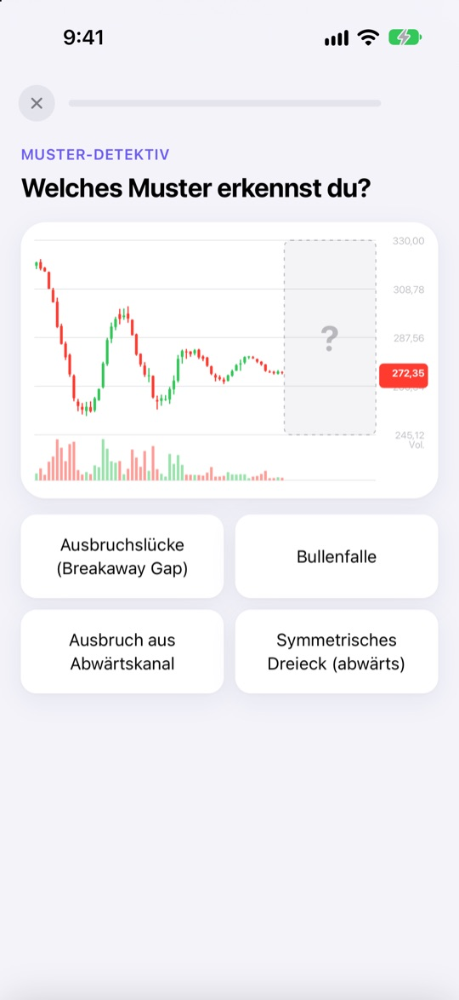

Chartmuster
Schulter-Kopf-Schulter-Formation: erkennen und Kursziel berechnen
Die Schulter-Kopf-Schulter-Formation ist die bekannteste Umkehrformation der Charttechnik. So erkennst du sie, so berechnest du das Kursziel, und daran scheitern die meisten.

Die Schulter-Kopf-Schulter-Formation (kurz SKS) ist ein Chartmuster, das am Ende eines Aufwärtstrends entstehen kann. Sie besteht aus drei Hochs: Das mittlere, der Kopf, liegt am höchsten, links und rechts davon liegen zwei niedrigere Schultern. Die Formation zeigt, dass den Käufern die Kraft ausgeht, und gilt als die bekannteste Umkehrformation der Charttechnik.
So ist die Formation aufgebaut

- Linke Schulter: Der Kurs steigt auf ein Hoch und fällt danach etwas zurück.
- Kopf: Der Kurs steigt auf ein neues, höheres Hoch und fällt danach ungefähr auf das vorherige Tief zurück.
- Rechte Schulter: Der nächste Anstieg schafft das Hoch des Kopfes nicht mehr und dreht tiefer.
- Nackenlinie: die Linie durch die beiden Tiefs zwischen Schultern und Kopf. Sie kann waagerecht oder leicht schräg verlaufen.
Die Nackenlinie ist nichts anderes als eine Unterstützung. Wird sie durchbrochen, kippt das Bild.
Die Psychologie dahinter
Im Aufwärtstrend schaffen die Käufer immer neue Hochs. Am Kopf gelingt das ein letztes Mal. An der rechten Schulter reicht ihre Kraft nicht mehr: Das erste tiefere Hoch entsteht. Fällt der Kurs danach unter die Nackenlinie, haben die Verkäufer die Kontrolle übernommen. Wer in der Nähe des Kopfes oder der rechten Schulter gekauft hat, liegt jetzt im Minus und verkauft häufig bei der nächsten Erholung. Das bremst weitere Anstiege.
Die Bestätigung: der Bruch der Nackenlinie
- Schlusskurs unter der Nackenlinie: Ein Tief, das nur kurz darunter fällt und am selben Tag zurückkommt, reicht nicht.
- Steigendes Volumen beim Bruch macht das Signal glaubwürdiger.
- Rücklauf (Pullback): Häufig steigt der Kurs nach dem Bruch noch einmal bis an die Nackenlinie, die jetzt als Widerstand wirkt. Viele Trader nutzen diesen Moment, weil der Abstand zum Stop dann klein ist.
Kursziel berechnen
Die klassische Faustregel: Der Abstand vom Kopf bis zur Nackenlinie wird vom Bruchpunkt aus nach unten abgetragen.
| Kopf | Nackenlinie | Höhe der Formation | rechnerisches Kursziel |
|---|---|---|---|
| 120 € | 100 € | 20 € | 80 € |
| 54 € | 48 € | 6 € | 42 € |
| 215 € | 190 € | 25 € | 165 € |
Bei einer schrägen Nackenlinie misst du den senkrechten Abstand vom Kopf bis zur Linie direkt darunter und trägst ihn von dem Punkt ab, an dem der Kurs die Linie durchbricht.
Stop und Chance-Risiko-Verhältnis
Ob sich ein Trade lohnt, entscheidet das Verhältnis von Chance und Risiko. Ein Beispiel mit der ersten Zeile der Tabelle: Die Nackenlinie bei 100 € bricht. Ein Trader, der auf fallende Kurse spekuliert, steigt nach dem Rücklauf bei 98 € ein. Das Kursziel liegt bei 80 €, die Chance beträgt also 18 € je Aktie. Den Stop kann er an zwei Stellen setzen:
| Stop | Begründung | Risiko | Chance-Risiko-Verhältnis |
|---|---|---|---|
| 104 € | knapp über der Nackenlinie: Steigt der Kurs wieder darüber, ist der Bruch gescheitert | 6 € | 3,0 |
| 112,50 € | über der rechten Schulter bei 112 €: mehr Spielraum, aber deutlich mehr Risiko | 14,50 € | 1,24 |
Die Formel fürs Verhältnis steht im Artikel CRV berechnen, wie viele Aktien zum Risiko passen, zeigt Positionsgröße berechnen. Für Anleger, die die Aktie halten, ist der Bruch der Nackenlinie vor allem ein Anlass, den eigenen Stop zu prüfen.
Die umgekehrte Schulter-Kopf-Schulter
Am Ende eines Abwärtstrends gibt es das Muster spiegelverkehrt: drei Tiefs, das mittlere am tiefsten, die Nackenlinie verläuft durch die Hochs dazwischen. Bricht der Kurs über die Nackenlinie, gilt die Wende nach oben als bestätigt. Das Kursziel funktioniert genauso, nur nach oben:
Beispiel: Kopf bei 40 €, Nackenlinie bei 50 € ergibt ein rechnerisches Ziel von 60 €.
Wie lange dauert eine Schulter-Kopf-Schulter?
Eine feste Dauer gibt es nicht. Im Tageschart erstreckt sich die Formation oft über mehrere Wochen bis Monate, im Stundenchart über einige Tage. Je länger sich ein Muster aufbaut und je klarer die drei Hochs sind, desto mehr Beachtung findet es bei Marktteilnehmern. Achte außerdem darauf, dass die beiden Schultern in Höhe und Dauer einigermaßen zueinander passen. Ein völlig schiefes Gebilde ist oft keine SKS.
Typische Fehler
- Zu früh handeln: Wer schon an der rechten Schulter verkauft, spekuliert auf einen Bruch, der vielleicht nie kommt.
- Den Trend davor übersehen: Eine Umkehrformation braucht einen Trend, der sich umkehren kann.
- Die Nackenlinie zurechtbiegen: Wer die Linie so lange verschiebt, bis sie passt, sieht Muster, wo keine sind.
- Das Volumen ignorieren: Ein Bruch ohne erhöhtes Volumen gilt als weniger verlässlich.
- Das Kursziel als Garantie sehen: Es ist eine Rechengröße, kein Versprechen.
Schulter-Kopf-Schulter üben
In InQuestly erklärt die Gratis-Lektion „Umkehrformationen“ im Kurs Charttechnik & Muster die Schulter-Kopf-Schulter-Formation sowie Doppeltop und Doppelboden. Im Gratis-Trainer „Muster-Detektiv“ suchst du die Formationen anschließend selbst in Charts. Die Kursverläufe zum Üben sind nachgebildet, echtes Geld ist nie im Spiel. Einen Überblick über weitere Formationen gibt der Artikel Chartmuster erkennen, kurzfristige Signale aus wenigen Kerzen zeigt Kerzenmuster.
Häufige Fragen
Was ist eine Schulter-Kopf-Schulter-Formation?
Ein Chartmuster aus drei Hochs, bei dem das mittlere am höchsten liegt. Es kann das Ende eines Aufwärtstrends anzeigen und gilt als bestätigt, wenn der Kurs unter die Nackenlinie fällt.
Wie berechne ich das Kursziel einer SKS?
Den Abstand vom Kopf zur Nackenlinie messen und vom Bruchpunkt nach unten abtragen. Kopf 120 €, Nackenlinie 100 € ergibt ein rechnerisches Ziel von 80 €.
Was ist eine umgekehrte Schulter-Kopf-Schulter?
Das Spiegelbild am Ende eines Abwärtstrends: drei Tiefs, das mittlere am tiefsten. Der Bruch über die Nackenlinie gilt als Signal für eine Wende nach oben.
Wann ist eine SKS bestätigt?
Wenn ein Schlusskurs die Nackenlinie durchbricht, idealerweise mit steigendem Volumen. Vorher ist es nur eine mögliche Formation.
Wie zuverlässig ist die Schulter-Kopf-Schulter-Formation?
Kein Chartmuster funktioniert immer. Die SKS ist eine der bekanntesten Umkehrformationen, scheitert aber regelmäßig. Deshalb gehören Stop und Positionsgröße immer dazu.
Wie lange dauert eine Schulter-Kopf-Schulter?
Im Tageschart meist mehrere Wochen bis Monate, im Stundenchart einige Tage. Eine feste Dauer gibt es nicht.
Dieser Artikel dient der Bildung und ist keine Anlageberatung. Beispiele sind vereinfacht und ohne Steuern dargestellt.